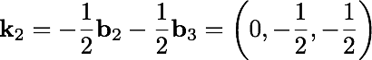
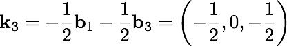
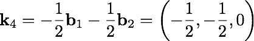
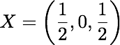
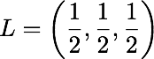
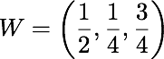

Vibrations of MgO crystal


Vibrations of MgO crystal

5. Explicit information about each orbit is obtained with Or, below:

6. Explicit information about each k-point is given by Kp, below:

As expected, we have 4 k-points. The Gamma point is the first, then there are three others, each given both in Cartesian coordinates (to be multiplied by ) and in fractional coordinates, corresponding to the expansion of the k-points into reciprocal lattice vectors of the original primitive cell:




The MgO bulk crystal is a cubic crystal with the fcc lattice. On the left you can see its Brillouin zone with some k-points marked, these are in fractional coordinates (see, e.g. my book):



It appears that all three non-trivial k-points we reproduce with this particular cell extension we used with Su above, are the X points and the vibrations for each of these X points should be exactly the same. This is a bit of a setback for us as this particular 4-times extension delivers only two distinct k-points. In fact, one can find a 2-time cell extension which would give the same k-points and in practice you are advised to try different extensions to search for the smallest cell(s) which would reproduce particular k-points of interest.
7. Finally, information about the symmetry is given by Sy, below:

We see that we have 4 irreducible representations corresponding each to either of the k-points. Each of the irreps is one-dimensional. This table or the one with Kp give the required correspondence of the irreps numbers and the k-points.